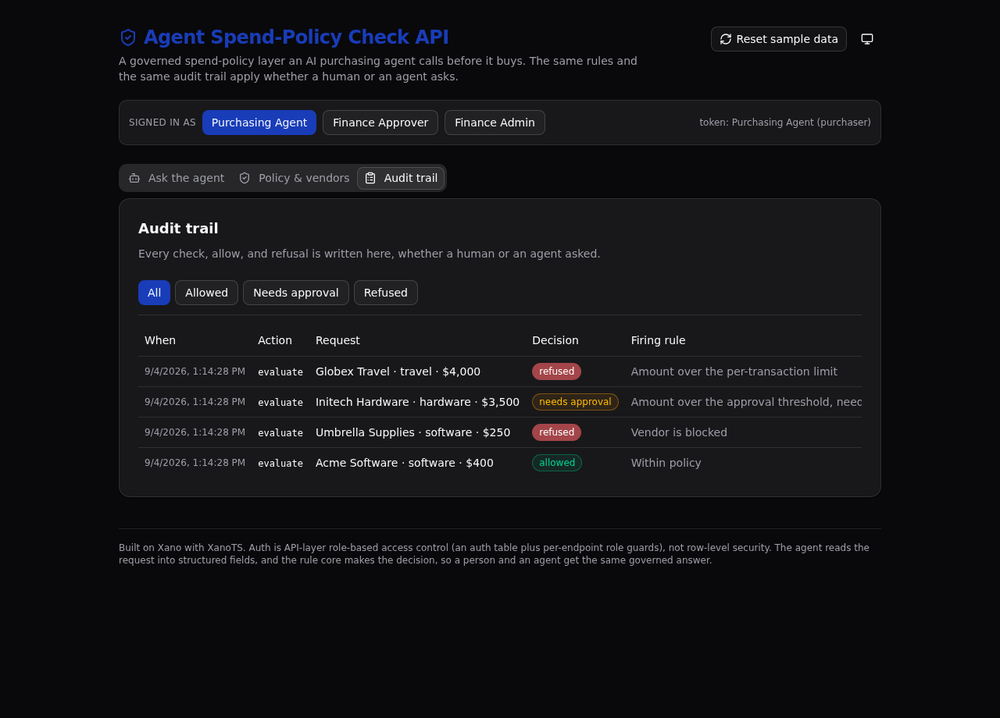

A governed spend-policy layer an AI purchasing agent calls before it buys. One versioned rule set decides every purchase, a person and an agent get the same answer, and every check lands in one audit trail.

An autonomous purchasing agent should not decide on its own what the company is allowed to buy. This backend puts one governed rule set between the agent and the spend. The agent reads a plain-language request, and a single rule core answers one question: may this purchase proceed? The same core answers whether a person or an agent asks, and it writes an audit row every time.
The proof is control, not speed. A technical evaluator can read the rule core in one file, see the roles enforced at the API layer (not row-level security), and open the audit trail to check that every refusal names the exact rule that fired.
The rule core loads the active policy for the category and the vendor status, then applies the rules in order. The first match wins:
Roles are enforced per endpoint. A purchaser can commit an allowed request but is refused when it needs approval. An approver can commit that one. Every attempt, allowed or refused, is logged.
Paste this into your AI coding agent to spin up your own copy:
Or clone it yourself:
git clone https://github.com/xano-scratch/agent-spend-policy-api cd agent-spend-policy-api npm install npx xanots login npm run xano:deploy
| Method | Path | Auth | What it does |
|---|---|---|---|
| POST | /api:spend/login | public | Sign in as a seeded agent, return a bearer token. |
| POST | /api:spend/evaluate | agent | Run the rule core, record the request, write an audit row. |
| POST | /api:spend/agent-check | agent | The agent reads a plain-language request; the rule core decides. |
| POST | /api:spend/commit | agent | Commit a decision, behind a role guard. |
| GET | /api:spend/actions | agent | The audit trail, newest first, filterable by decision. |
| GET | /api:spend/policies | public | The active policy per category and the vendor list. |
| POST | /api:spend/seed | public | Reset and load the sample data. |
Type a purchase in plain words. The agent reads it and the rule core returns the governed decision with the rule that fired.
The active spend policy per category and the vendor allow and block list, so a reviewer can read the rules a decision came from.
Every check, allow, and refusal, newest first, with the decision, the firing rule, and the policy version. The governance payoff.